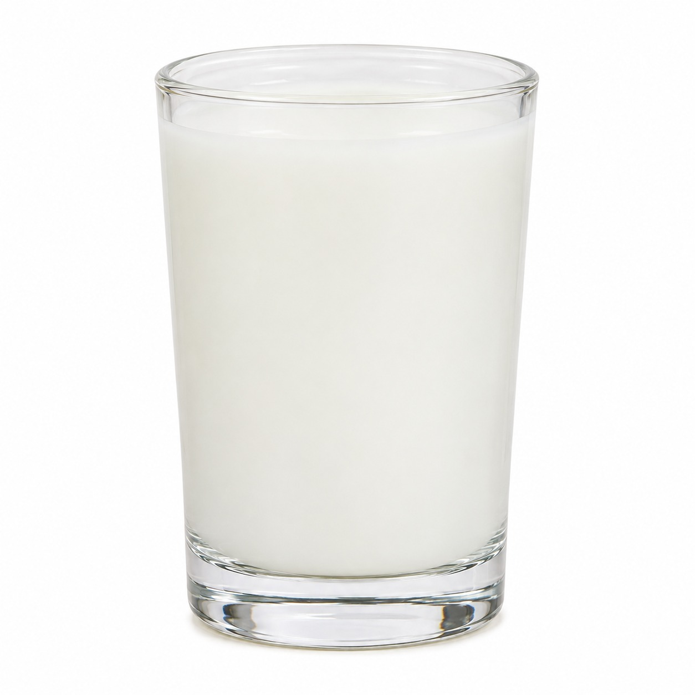

Pour the oil into the glass.
pour
por
I pour the oil into the glass.
UKRAINIAN
наливати
nalyvaty
Pour the water into the glass.
Mix the oil and the water.
mix
mix
I mix the oil and the water.
UKRAINIAN
змішувати
zmishuvaty
Look. The oil goes up. The water stays down.
The oil and the water separate.
separate
SEP · a · rate
The oil and the water separate.
UKRAINIAN
розділятися
rozdiliatysia
Oil and water do not mix.
We are in the dark.
God is light.
We cannot go to God.

Now it is white.
Where is the oil? Where is the water?
connect
con · NECT
The soap connects the oil and the water.
UKRAINIAN
з’єднувати
ziednuvaty
The soap is in the oil.
The soap is in the water.
The soap holds them together.
Jesus connects us to God.
“For he has rescued us from the dominion of
darkness and brought us into the kingdom of the Son he loves.”
Colossians 1:13
dark
dark
We were in the dark.
rescue
RES · cue
God rescued us.
UKRAINIAN
рятувати
riatuvaty
kingdom
KING · dom
Jesus is the king. This is his kingdom.
Today’s words
📷 take a picture
| ENGLISH | JAPANESE | SPANISH |
UKRAINIAN | ARABIC |
|---|
| pour |
注ぐ sosogu | verter |
наливати nalyvaty |
يَصُبّ yasubb |
| mix |
混ぜる mazeru | mezclar |
змішувати zmishuvaty |
يَخلِط yakhlit |
| separate |
分かれる wakareru | separarse |
розділятися rozdiliatysia |
يَنفَصِل yanfasil |
| connect |
つなぐ tsunagu | unir |
з’єднувати ziednuvaty |
يَربِط yarbit |
| dark |
暗い kurai | oscuro |
темний temnyi |
مُظلِم muzlim |
| rescue |
救う sukuu | rescatar |
рятувати riatuvaty |
يُنقِذ yunqidh |
| kingdom |
王国 oukoku | reino |
царство tsarstvo |
مَملَكة mamlaka |
All of this happened.
Why?
God loves you.
JAPANESE
神はあなたを愛しています
Kami wa anata o aishite imasu
UKRAINIAN
Бог любить тебе
Boh liubyt tebe
ARABIC
اللهُ يُحِبُّك
Allāhu yuhibbuk
→ / CLICK NEXT · ← BACK